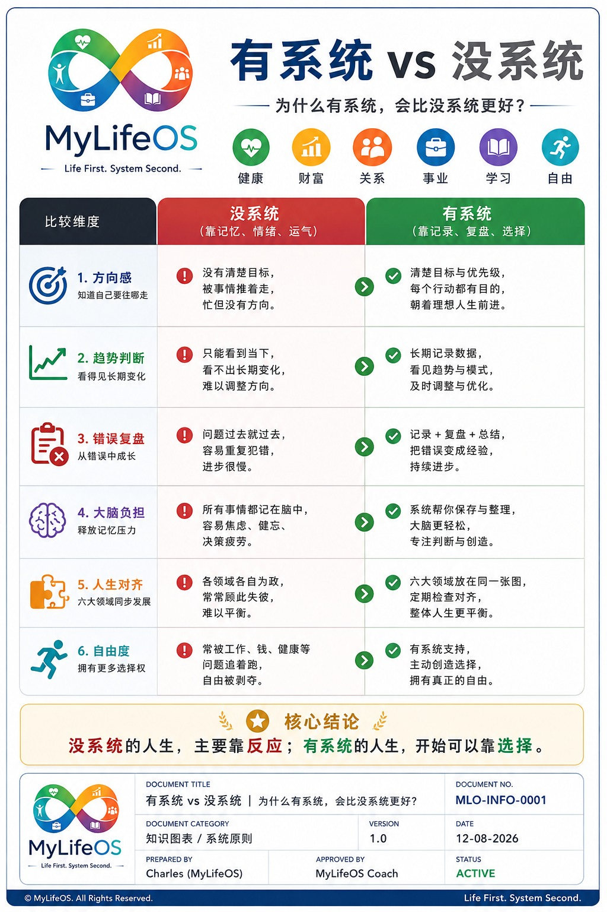
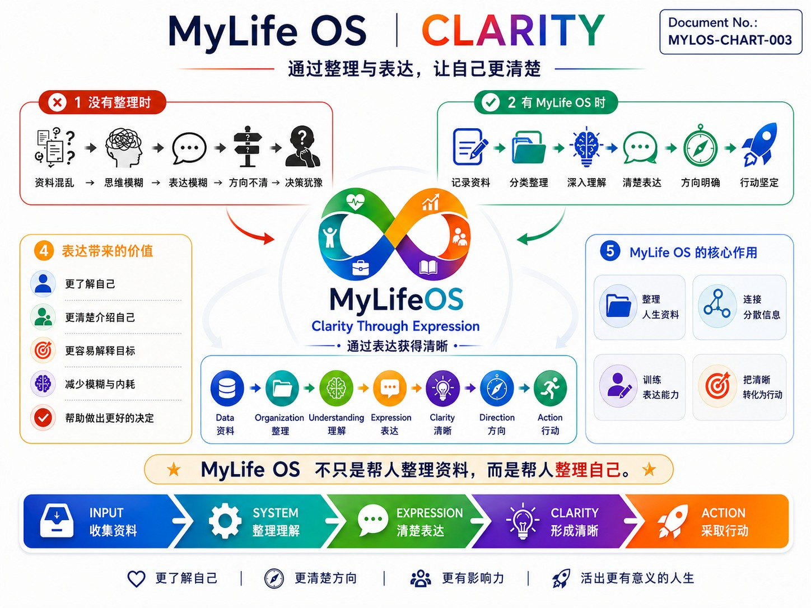
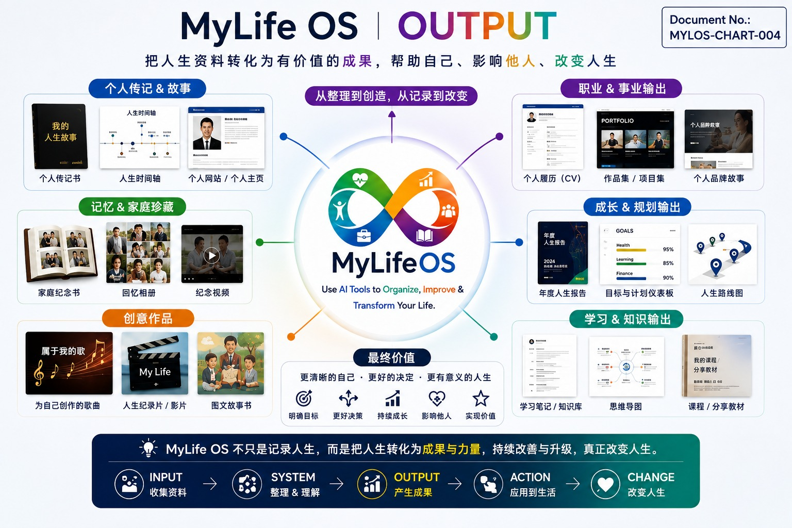

BOOK 4 · 1 / 14
序章 为什么还需要一种新的生活方式
一个人已经活了几十年，为什么还需要 Life OS？
生活原本就在继续。我们上班、照顾家人、处理问题，也在经历中学习。没有给这些事情起一个系统的名字，并不代表过去的生活没有价值。
我开始记录，也不是因为生活需要重新开始。我只是越来越希望，发生过的事情能够留下来；当下一次需要判断时，不必又从记忆里的几个片段开始。
第一本讲我为什么记录。第二本追问，这些记录让我看见自己是谁。第三本把方法建立起来：怎样留下资料，怎样整理、核对，再进入日、周、月和阶段回顾。
第四本接着问：有了这些方法，我怎样生活？
这本书沿着一条线往前走：系统带来观察的位置，整理帮助形成清晰，六大领域帮助看见联系，判断进入行动，经验形成成果，再回到生活里检查变化。
System → Clarity → Alignment → Action → Output → Change。
这不是一次设置就能完成的承诺。它是我希望持续实践、也需要持续修正的过程。无论系统发展到哪里，我想保留一个次序：Life First. System Second. 生活在前，系统在后。
BOOK 4 · 2 / 14
第一章 Life Without a System｜忙碌之中，什么散开了
Part I — Why a Life System Matters｜为什么需要生活系统
没有系统，未必意味着没有安排。日历、聊天、笔记和多年养成的习惯，都可能帮助一个人把日子过好。
真正值得留意的，是这些安排之间有没有连接。
一件事情可能留在工作聊天里，一个想法留在手机备忘录里，一段担忧则只留在脑中。每一处都有资料，但需要作决定时，仍然要重新寻找、重新回忆。忙了一天以后，我知道自己处理了很多事，却不一定说得清哪些事情最值得继续。
第三本谈怎样保存材料。到了这里，我更关心保存以后，能不能减少这种反复从头开始的感觉。
如果一个困难几次出现，却没有留下当时的处境和处理结果，下一次我可能仍然只记得它令人烦躁。经历累积了，判断的依据却没有跟着累积。
所以我需要的，不是一套把每分钟都填满的制度。它首先是一个能够找回事情的位置，让今天的我有机会接上昨天的理解。
读者可以先问一个很小的问题：最近哪一件事，我已经重新想过很多次，却一直没有留下结论？从那里开始，就能知道系统需要帮助什么。
BOOK 4 · 3 / 14
第二章 From Reaction to Choice｜在反应之间，留出选择
当人生缺少系统时，我们更容易对眼前发生的事情作出反应；当人生有了系统，我们就多了一层观察、复盘与选择的空间。

这张比较图放在全书前面，因为它回答的不是怎么填表，而是为什么值得多做记录和回顾。
图中的左右两边，可以理解为两种处理事情的倾向，不是把人分成好与坏。没有数字工具的人，也可能很有方向；拥有很多表格的人，也可能仍然被事务推着走。区别要回到实际使用中观察。
方向感，是能不能说清为什么忙。趋势判断，是能不能把今天放回一段时间里。错误复盘，是能不能把一次问题留下的经验，带进下一次处理。
大脑负担，涉及哪些内容可以交给可靠的记录保存。人生对齐，是在作一个选择时，仍然看见其他重要部分。自由度，则是现实限制之中，能不能多看见一个可以商量、调整或暂缓的选项。
这些价值不会因为建立了项目就自动出现。资料找不到、整理不准确、维护太费力，系统反而可能增加负担。
一个练习情境是：临时工作出现，而晚上已经答应陪伴家人。先确认期限、影响和可协商的部分，再决定怎样安排。最后可能仍然需要处理工作，但这个决定经过了比较，也记住了需要补回的承诺。
变化就在这里：反应之后，开始有机会多问一句——我还有什么选择？
BOOK 4 · 4 / 14
第三章 Building Clarity｜把说不清楚的事情，慢慢说清楚
记录留下材料，整理给材料位置，理解找出联系，表达则帮助我检查自己是不是真的想明白了。

图中的 Data、Organization、Understanding、Expression、Clarity，描述的是一个可以反复来回的过程。说到一半发现矛盾，就回去看资料；整理以后仍不明白，就保留问题，而不是急着给它一个漂亮结论。
创作这套书时，我就遇到过这样的事。第二本加入生活细节以后，文字听起来顺了，我却感觉“我是谁”这个主题变得不清楚。我把这个感受说出来，才进一步明确：每章的经历，都应该带来一点对自己的认识。
那一次表达，不只是告诉 AI 哪里需要修改。它也帮助我说清，自己到底想写一本怎样的书。
清晰不一定表现为答案变多。有时候，它是把一个很大的“不满意”，变成一个可以处理的问题：主线没有连上，例子太长，或者结论还没有依据。
在日常里，也可以沿用这个方法。先说发生了什么，再说自己怎么理解，最后说哪里还不确定。能把未知说清楚，同样是一种进展。
BOOK 4 · 5 / 14
第四章 The Six Domains｜把整个人放回同一张图
Part II — Seeing My Whole Life｜看见完整的生活
我可以很认真地完成工作，却仍然需要问：身体有没有得到恢复？关系有没有得到注意？学习有没有进入实际使用？自己还有没有选择时间的空间？
本书采用健康、财富、关系、事业、学习、自由六个观察领域。它们帮助我把生活放在一起看，不要求每天平均投入，也不要求每一项都拿到高分。

这张参考图使用“心灵”作为第六个轴，另外三张图使用“自由”。两者有关，却不是同一个概念。心灵可以观察内在感受与意义；自由可以观察时间、选择与自主空间。使用这张图时，需要先说明自己选的是哪一个，前后比较时不要悄悄换掉定义。
图里的 45、88、68 和“幸福指数”是示意表达。本书没有建立对应的验证量表，也没有据此测量读者的幸福程度。图中的课程入口描述一种可能的延伸，不代表这个阅读网站已经提供测评或自动推荐课程。
如果要作自我观察，可以先用文字：目前满意什么、担心什么、有哪些具体记录。一定要打分时，也先写清范围、时间与判断依据。分数暂时说不清，就不用勉强填写。
雷达图提供一个谈话入口。真正重要的，是图背后那几件具体的生活事实。
BOOK 4 · 6 / 14
第五章 Seeing Patterns and Imbalance｜看见变化，也看见代价
一天忙于工作，未必代表生活失衡。某个时期需要照顾家人，也可能让其他安排暂时退后。只看一张图，很容易把必要的取舍误读成长期的问题。
我需要把时间放进来。
先选一个范围，例如最近四周，再比较相同的问题：哪些安排持续有位置，哪些一直被推迟？推迟之后有没有回来？自己付出了什么，又得到了什么？
练习情境里，一个人连续三次取消运动。单看次数，还不能说明原因。他可能正在处理紧急事务，也可能安排了一个始终无法实行的时间。回到具体记录，才知道下一步应该调整任务、时段，还是先安排恢复。
同样地，工作成果增加与疲倦增加一起出现，可以提醒我观察两者的关系，却不能马上证明全部原因。
看模式，是为了帮助选择，不是为了给生活定罪。我希望回顾能保留现实的复杂：有些阶段确实比较难，有些付出也是我愿意承担的。
值得追问的是，当情况已经改变，我是否仍然沿用过去的安排？如果是，就有了一个可以重新选择的位置。
BOOK 4 · 7 / 14
第六章 Review Becomes Direction｜复盘怎样影响下一步
一份回顾写得完整，还不代表它已经帮助生活。它需要回到一个具体选择里。
第三本讲过，我曾更正记录日期，也曾补充休息的情境。后来的说明改变了材料应该怎样被理解。这提醒我，复盘前先读到更正，是比增加分析篇幅更实际的一步。
从一个发现走到方向，可以保留三件事：依据是什么，我准备改变什么，下次怎样检查。
例如“整理前先检查日期更正”，就比“提高记录质量”更容易实行。下一次整理时有没有做，错误有没有减少，都可以再回来看。没有结果之前，它仍然是一个准备尝试的方法。
月度回顾还可以留下三种决定：继续、调整、暂缓。暂缓同样有价值，它为真正重要的事情腾出位置。
方向不必一次定得很远。先让一份回顾影响一个小决定，再让决定的结果成为新的记录，系统才开始和生活互相连接。
BOOK 4 · 8 / 14
第七章 Life Data Becomes Output｜留下的资料，可以变成什么
Part III — Turning Life Into Value｜把生活资料转化为价值
一段记录最初可能只为保存当时的事情。后来，当它与其他资料放在一起，就可能成为一份说明、一张检查表、一段故事，或者一件作品的材料。

这张图展开的是可能性：个人故事、家庭纪念、职业作品、学习资料、规划和创作。图中的缩略图不代表我已经完成了所有这些成果，也不要求读者全部去做。
正在写的这套书，是我此刻最具体的例子。我把记录、问题和图表放在一起，逐步说明自己的想法，再根据阅读时的感受继续修改。
但资料不会自动成为作品。首先要知道给谁看、解决什么问题，再挑选必要材料，核对事实，并整理成对方能够理解的形式。
同一段经历可以留在私人日记里，也可以经过取舍后进入公开作品。涉及家人、客户或工作细节时，分享范围同样是创作的一部分。
成果的价值不只看数量。一页能让下次工作少漏一个步骤的说明，也可能比十份没有再打开的报告更有帮助。
BOOK 4 · 9 / 14
第八章 Career, Family, Knowledge and Creation｜不同成果，服务不同的人
工作中的经验，可以尝试整理成检查表；学习中的理解，可以写成以后找得到的笔记；家人的片段，可以在合适的分享范围内成为共同回忆。
这些成果的用途不同，整理方式也应该不同。
工作说明需要清楚的条件、步骤和责任。家庭回忆需要尊重当事人的感受，不能只追求资料完整。知识笔记需要保留出处和疑问。创作则需要取舍，让内容有自己的主题。
我不希望把生活里的每一刻都变成可交付的东西。陪伴可以只是一段陪伴，休息可以不产生任何作品。记录应当保留这种自由。
如果想开始一种输出，先选择已经有材料、也有明确用途的小成果。完成后问使用者是否看懂，或者观察自己是否真的再次使用。
这比同时展开所有可能性更容易检验价值。先完成一件，再根据它带来的帮助决定下一步。
BOOK 4 · 10 / 14
第九章 My Daily Thinking Partner｜AI 与 Charles，怎样一起思考
Part IV — Living With MyLifeOS｜把系统带进每天
我负责经历生活、补充情境和作决定。AI 可以帮助整理文字、比较材料、提出问题，也可以把想法变成一份可以修改的草稿。
这次书稿的过程就包含这样的来回。我说哪里读起来迷失，补上自己希望表达的重点，再用图表把方向具体化。AI 的草稿让我有东西可以回应，而我的回应继续决定书往哪里走。
合作需要一个清楚的起点：这一次到底提供了哪些资料？哪些是原话，哪些是整理，哪些仍然只是推测？放在同一个项目里，并不能当作每次对话都已读到全部历史。
我也需要保留不同意的权利。一段回应听起来很完整，仍然可能误解我的状态。更正不是打断合作，而是让合作贴近现实。
一个简单的协作要求是：“先依据我提供的记录整理，列出不确定的部分，再提出两个可以比较的选择。”这样我看到的，不只是一个替我决定的答案。
伙伴的价值，是帮助我更清楚地思考；生活的责任，仍然在我这里。
BOOK 4 · 11 / 14
第十章 From Memory to Decision Support｜让过去帮助判断
记忆常常留下最强烈的部分。记录则给我另一个机会，找回当时的条件、已经尝试的方法，以及后来发生的事。
但过去的资料并不能直接替今天作决定。期限、资源、关系和自己的状态都可能不同。
使用历史经验之前，我会先比较：这次与上次哪里相似，哪里不同？当时有效的方法，依赖了哪些条件？现在还具备这些条件吗？
练习情境里，上次把某项工作留到晚上顺利完成，不代表这次也适合这样安排。今天可能有家庭承诺，也可能已经很疲倦。历史提供选项，当前处境决定它是否合适。
我希望系统帮助保存的是“当时为什么这样选”，而不只是“最后选了什么”。这样，回顾才能理解判断的过程，而不只是模仿结果。
决定以后，再留下实际结果。支持判断的资料，就是这样一点一点变得可靠，而不是因为文件越来越多就自然可靠。
BOOK 4 · 12 / 14
第十一章 From Action to Change｜改变，需要回到生活里确认
理解之后，还要试一次。试过之后，还要看看发生了什么。
我可以把一个调整写得很小：下次整理先检查更正；本周先完成一件作品；忙碌时只保留必要记录。每一种调整，都需要一个回看的时间和一个能够观察的结果。
如果没有实行，先看阻碍在哪里。如果实行了却没有帮助，就修改方法。如果确实有帮助，再考虑保留为习惯。
不要只记录理想结果。一次尝试增加了负担，同样是重要资料。它可能说明步骤太多、时间不合适，或者原本想解决的并不是最重要的问题。
生活中的变化，也不全由系统造成。工作环境、他人的帮助和不同阶段的机会都会产生影响。复盘时保留这些因素，才能让自己的理解更诚实。
第五本会把这个问题继续拉长：哪些变化能够持续，哪些能力正在形成。而在第四本，我先让方法落地，让一次选择有机会变成一个可以回看的结果。
BOOK 4 · 13 / 14
第十二章 Life First, System Second｜生活在前，系统在后
Part V — A Different Way to Live｜另一种生活方式
系统建立以后，最容易忘记的，可能就是最初为什么建立它。
如果为了补齐记录而耽误休息，为了做漂亮的图而忽略身边的人，或者因为漏写一天就觉得失败，我需要停下来重新安排。
Life First. System Second.
这句话不是书末的一句装饰。它应该影响日常使用：忙的时候简化，资料不足的时候留下空白，中断以后从现在回来。没有必要为了维持连续天数，重新编造已经想不起来的细节。
在一次记录里，我补充说明自己只是短暂休息，恢复以后继续做事，也表达了对生活充实的感受。这提醒我，系统需要听懂实际的人，不能把每一次停下来都解释成退步。
某些重要时刻，先去经历就好。后来想留下一句话，可以留下；不想记录，也不需要让它失去价值。
我希望 MyLifeOS 带来的是更多观察、复盘与选择的空间。当它需要调整时，我可以调整它；当生活需要我放下工具时，我也能放下。
生活不必服从系统。系统应该帮助我把生活过得更明白。
爱自己，进入普通的一天
当我开始把珍惜自己放进生活，问题不再只是“今天做得够不够”。我也要听见：身体是否需要休息，已经答应的陪伴有没有位置，自己有没有允许一段不为成果服务的时间。
运动、休息和体验生活，都可以是照顾自己的方式，但它们不必再变成一张必须完成的成绩单。今天适合什么，要回到自己的真实状态。
我可以认真承担责任，也可以说明自己的限度；可以希望作品更好，也可以承认需要停一下。这些选择需要沟通与取舍，并不等于把其他人放到生活之外。
MyLifeOS 如果有帮助，应该让我更容易作出这样的选择。它不需要证明我多么自律，而需要记得：那个正在努力的人，也属于值得照顾的生活。
BOOK 4 · 14 / 14
尾声 从有一个系统，到拥有选择的空间
回到最初的问题：活了几十年，为什么还需要 Life OS？
对我而言，是希望过去不只停在过去。留下来的经历，能够帮助今天理解自己，也为下一次选择提供一些依据。
有系统与没系统的比较，提醒我注意自己的处理方式。CLARITY 帮助我把想法说清楚。六大领域把注意力带回完整的生活。OUTPUT 则让我看见，一些经历可以经过整理，成为能够使用或分享的成果。
它们最后都要回到行动，也都要接受现实的检验。
第三本回答怎样建立方法。第四本把问题带进生活：这些方法怎样影响我的观察、选择和实践？第五本将继续问，在反复实践之中，我正在怎样成长？
我不需要先完成一个完美的系统，才开始过好今天。先认真生活，再让记录与回顾帮助下一次选择。这就是我想与 MyLifeOS 一起生活的方式。